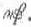

Kant: AA XIV, Physische Geographie. , Seite 625 |
|||||||
Zeile:
|
Text:
|
|
|
||||
| 01 | Erbrecht. 1500 abgeschafft. jetzt Wahlkönigreich. | ||||||
| 02 | Wahlort bey Wohla, einem mit Graben und Walle umgebenen Orte. | ||||||
| 03 | 3 Pforten: gegen Morgen vor Groß Pohlen, gegen Mittag vor Klein | ||||||
| 04 | Pohlen, gegen Abend vor Litthauen. Szopa. Pacta conventa. | ||||||
| 05 | Rechte des Königs. Verschenkung der Ehrenämter und königlichen | ||||||
| 06 | Güter. Der König ernennt die Erzbischofe und Bischofe. Ermelland | ||||||
| 07 | ausgenommen. ertheilt adliche Titel, nicht adliche rechte. Starosteyen. | ||||||
| 08 | Advocatien. | ||||||
| 09 | Königliche Einkünfte: 300,000  ., muß verpachten. Ritterorden |
||||||
| 10 | vom weissen Adler 1705 blau. | ||||||
| 11 | Reichsrath. 144 Senatoren. Erzbischofe von Gnesen und Lemberg. | ||||||
| 12 | 15 Bischofe. 37 Woiwoden, worunter 3 Castellane: von Cracow, Wilna, | ||||||
| 13 | Trock. Starost: Samoyten. 82 Castellane. Kronbediente. Kron‐Groß‐ | ||||||
| 14 | Marschall, Kron‐Groß‐Kantzler, Schatzmeister, Hofmarschall. | ||||||
| 15 | Reichstage. Comitia togata, Comitia paludata. Der 3te Reichstag: | ||||||
| 16 | Grodno, vorher Landtage. Landboten. 200. Reichstag. Liberum veto. | ||||||
| 17 | Vnanimitas votorum. | ||||||
| 18 | 1. Kron‐Groß‐Feldher. 2. Unterfeldher. 2 Referendarien. Woiwodschaften: | ||||||
| 19 | dignitarios. als Mundschenk. Truchses. Starosten: Richter. | ||||||
| [ Seite 624 ] [ Seite 626 ] [ Inhaltsverzeichnis ] |
|||||||
;){kind=link}